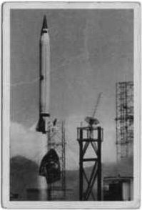
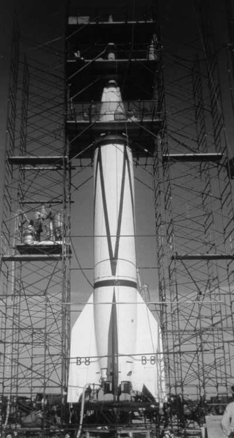
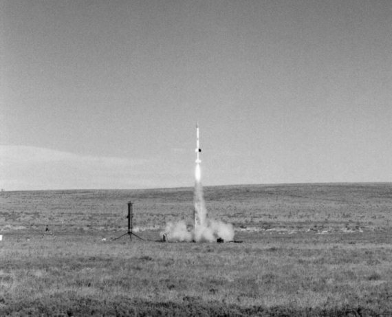

«Викинг», «Аэроби» и другие
Американская ракетная техника развивалась по иным законам, нежели в Советском Союзе. Если наши конструкторы начали с копирования немецких ракет, то в США пошли иным путем и, набираясь опыта в ходе испытательных пусков «Фау-2», создавали новые типы ракет для решения иных задач. Кто был прав, а кто неправ, история рассудила в 1957 году. А пока…
В конце 1940-х годов после долгих споров американцы приняли решение о разработке двух различных по своей конструкции ракет – большой, получившей название «Нептун», и маленькой, которую окрестили «Венера». Но оба этих названия использовались только на стадии проектирования. Когда дело дошло до воплощения в металле, их стали именовать «Викинг» и «Аэроби» соответственно.
Корпус и основные системы «Викингов» изготавливали в Балтиморе, штат Мэриленд, на заводе компании «Глен Л. Мартин», а двигательную установку – в штате Нью-Джерси на заводе компании «Риэкшн Моторс». Об этой фирме – детище «Американского ракетного общества» – я уже упоминал в одной из предыдущих глав. В январе 1949 года первые экземпляры ракет прибыли на полигон Уайт Сэндз.
«Викинги» значительно отличались от «Фау-2». Первые американские ракеты представляли собой узкий цилиндр диаметром 82 сантиметра и длиной от 13,8 до 14,8 метра. Стартовый вес первого экземпляра составил 4380 килограммов и был меньше «сухого» веса немецкой ракеты. Были и другие отличия. Так, если на «Фау-2» устанавливались независимые топливные баки, то у «Викингов», строившихся кустарным способом, бак со спиртом был несущим. В последующих экземплярах бак для кислорода также делали несущим. Это не только позволяло сэкономить на весе, но и ликвидировало промежутки между стенками бака и оболочкой ракеты, в которых при образовании течи могли скапливаться пары спирта и кислорода, что неминуемо вело к взрыву.
В конструкции «Викинга» были и другие новшества. Наиболее интересным из них являлся метод управления полетом. Двигатель устанавливался на карданном подвесе таким образом, что сервомоторы могли смещать ось двигателя для компенсации случайного отклонения. В отличие от «Фау-2» в американской ракете зажигание осуществлялось без предварительной ступени.
Выше я указал на различия между «Викингом» и «Фау-2». Но было и одно сходство, которое следует упомянуть. Обе ракеты в своих двигательных установках использовали одно и то же топливо – спирт и жидкий кислород. Особо удивляться этому не приходится. На тот момент это было самое эффективное ракетное топливо. Все высокотоксичные топлива появились гораздо позднее.
Испытания ракет «Викинг» на полигоне Уайт Сэндз начались в марте 1949 года. Первая попытка провести стендовые огневые испытания была предпринята 7-го числа. Однако за 15 минут до начала все приготовления пришлось остановить вследствие того, что отрывной штекер головной части ракеты плохо входил в свое гнездо. На следующий день это было исправлено, но перед самым началом испытаний из-за неплотного закрытия дренажных клапанов бака с кислородом весь сжатый азот вытек из баллонов. Потом лопнул трубопровод высокого давления, и на устранение этой неисправности было затрачено еще три дня. В результате стендовые огневые испытания удалось провести только 11 марта. Но их продолжительность составила всего 31 секунду, так как загорелась смазка и обнаружилась утечка пара из турбины.
22 апреля разладилась система управления. Принципиального значения для огневых испытаний это не имело, но во время летных испытаний могло бы окончиться катастрофой. Через два дня этот дефект был устранен, однако огневые испытания были опять прерваны через 24 секунды после начала, так как из ракеты повалил густой дым. Оказалось, что обгорела свежая смазка на паропроводах. Тем не менее, было объявлено, что ракета готова к летным испытаниям. Первый пуск был назначен на 28 апреля, но в запланированные сроки провести его не удалось. Сначала его отложили на несколько дней из-за плохой погоды. Потом пришлось регулировать кислородные дренажные клапаны.
Пуск первого «Викинга» состоялся лишь 3 мая. Ракета поднялась в воздух после некоторой задержки, вызванной повторной неисправностью дренажных клапанов. Подъем прошел удачно, однако через 54 секунды после старта, когда ракета была уже на высоте 27 километров, двигатель выключился. По этой причине максимальная высота полета через 160 секунд после старта составила всего лишь 80 километров. Максимальная скорость, показанная ракетой, равнялась одному километру в секунду.
Все были немного разочарованы достигнутыми результатами. Хотя программа испытаний и не предполагала, что «Викинг» побьет рекорды «Фау-2» по высоте и скорости, но все этого ожидали. Не получилось.
Почти шесть месяцев ушло на то, чтобы разобраться в причинах неудачи. Но до конца сделать это так и не удалось. Поэтому было решено пускать второй «Викинг», и уже в ходе его полета попытаться понять, что помешало первой ракете выполнить поставленную перед ней задачу. Руководитель работ Мильтон Розен и бригадир пусковой команды Лейтон пытались учесть любую возможную неисправность и проверяли все системы по нескольку раз. По самым скромным подсчетам, «Викинг-2» должен был подняться на высоту 240 километров.
Стендовые огневые испытания прошли быстро и без особых затруднений. Они продолжались ровно 30 секунд, как и предусматривалось программой. Однако в течение нескольких последних секунд из хвостовой части ракеты шел черный дым. Это же отмечалось и при испытаниях первого «Викинга» и, по-видимому, было связано с возгоранием смазки трубопроводов.
На этот раз персонал был подготовлен к такой ситуации: люди имели специальный инструмент, с помощью которого удалось устранить неисправность, состоявшую в том, что корпус турбины, оказывается, дал течь. Понадобилось двое суток, чтобы затянуть все болты и несколько раз проверить корпус турбины на герметичность.
Запуск был намечен на 26 августа 1949 года. В 11 часов утра представителей прессы попросили покинуть стартовую площадку, а в 11 часов 29 минут Мильтон Розен скомандовал: «Зажигание!». Воспламенитель загорелся, посыпались искры, отрывной штекер отделился от носовой части ракеты. Но двигатель не работал. Через 10 секунд пришлось старт отменить. При осмотре ракеты выяснилось, что жидкий кислород вытек и залил турбину, заморозив клапаны турбонасосного агрегата.
Запуск ракеты был перенесен на 6 сентября. В 10 часов утра Мильтон Розен снова скомандовал: «Зажигание!». На этот раз ракета взлетела. Операторы тревожно поглядывали на стрелки приборов, боясь новой неудачи. Через 19 секунд двигатель перестал работать. При скорости, которую ракета имела на тот момент, она должна была, в лучшем случае, достичь высоты около 50 километров. Позже выяснилось, что она смогла дотянуть до высоты в 51,5 километра.
Несмотря на неудачу, этот пуск был весьма полезным, так как удалось совершенно точно установить, что прекращение работы двигателя в какой-то степени связано с недостаточной герметичностью корпуса турбины. В частности, инженеры фирмы «Риэкшн Моторс» объясняли причину этой аварии так: корпус турбины, состоящий из двух частей, в момент взлета мог быть вполне герметичным, но, после того как он подвергся в течение некоторого времени воздействию нагретого парогаза, произошла деформация, и прокладка не выдержала давления. Парогаз проник в хвостовой отсек ракеты, сжег изоляцию на проводах и вызвал короткое замыкание, которое парализовало работу всех агрегатов. Хотя такое объяснение и звучало довольно убедительно, требовались веские доказательства. После испытаний турбины на заводе было установлено, что корпус турбины можно сделать сварным и таким образом предотвратить даже малейшую утечку пара. Действительно, после сварки корпуса никакой утечки парогаза больше не наблюдалось. Прекратились и преждевременные остановки двигателя.
Однако вскоре появились новые осложнения. Дело в том, что ракета «Викинг» создавалась для Военно-морского флота, и предполагалось, что она будет запускаться с палубы корабля. Для этой цели был специально оборудован военный корабль «Нортон Саунд». Проблема пуска ракеты с корабля заключалась, прежде всего, в придании ей необходимой устойчивости на пусковом столе. На земле это достигалось с помощью ветровых болтов, устанавливаемых на стабилизаторе. Однако нельзя было рассчитывать на то, что эти болты удержат ракету, когда она получит наклон в результате качки или маневра корабля. Приспособление же, использованное для запуска ракет «Фау-2» с авианосца «Мидуэй», не годилось для «Викинга».
Конструированием корабельной пусковой установки занимался специалист фирмы «Глен Л. Мартин» Ирвин Бэрр. Она состояла из несущего каркаса и двух вертикальных рельсов длиной 6 метров. Между ракетой и рельсами располагались пары роликов, причем одна пара находилась непосредственно против хвоста ракеты. При установке ракеты в вертикальное положение рельсы и ролики крепко удерживали ее, не давая опрокинуться при крене корабля. Во время пуска ракета должна была выкатываться по этим рельсам. Неясно было только, сможет ли ракета пройти рядом с рельсами, не касаясь их. В случае касания ракета, взлетев, могла опрокинуться и упасть за борт, что было совсем небезопасно для корабля.
В связи с этим у Бэрра появилась идея проверки старта с помощью полноразмерного макета «Викинга». На этом макете предполагалось установить пороховой ракетный двигатель, который обеспечивал бы такое же соотношение тяги и веса, как и в настоящей ракете. Вскоре были изготовлены два таких макета.
Пока Бэрр занимался конструированием своей «тележки», перед испытателями стояла задача осуществить пуск «Викинга-3».
Корпус турбонасосного агрегата этой ракеты был сварным, а все провода, которые в первом варианте проходили слишком близко от нагретой турбины, теперь были перенесены на периферию. Провода же, входившие в хвостовой отсек, были заключены в металлические трубки. Запуск был назначен на 7 февраля 1950 года, и нужно было поторопиться, поскольку срок завершения «проекта Рич» – так был условно назван запуск ракеты с корабля – приближался, и отложить его было проблематично.
Первый стендовый прожиг двигателя прошел неудачно: повторилось все то, что произошло при испытании ракеты «Викинг-2». Однако проверка показала, что клапаны магистрали подачи перекиси водорода не были заморожены, их просто заело. Вторая попытка прожига была сделана в тот же день, но уже через 14 секунд работы двигателя Лейтон приказал выключить его. Система управления вибрировала, и эта вибрация передавалась двигателю ракеты. Следующий прожиг должен был состояться 6 февраля, а 9 февраля ракету все-таки предполагалось запустить.
Огневые испытания окончились благополучно, но 9 февраля погода оказалась неблагоприятной. Густая облачность, по сообщениям метеорологов, наблюдалась над всей территорией США вплоть до Западного побережья, и лишь в одном месте имелся разрыв, перемещавшийся по направлению к полигону Уайт Сэндз. Еще не успела закончиться заправка ракеты спиртом, как вдали на западе, над горами Орган, появилась узкая полоска голубого неба. Служба погоды предупредила, что за этим разрывом последует еще более сильная облачность. Нужно было запускать ракету, и ровно в 2 часа 45 минут пополудни она наконец-то взлетела. Через 34 секунды радиолокационная станция слежения сообщила, что «Викинг-3» слишком далеко отклонился к западу. Нужно было остановить двигатель, иначе ракета упала бы за пределами полигона. Однако ей дали возможность пролететь еще некоторое расстояние, и только через 59,6 секунд после старта двигатель был выключен. Максимальная высота, достигнутая ракетой, составила 80 километров. Вновь о рекордах речи не шло.
Ракету «Викинг-4» предстояло запустить из того района Тихого океана, где магнитный экватор пересекает географический. Это место находится близ небольшого островка Джарвис. Но перед основным стартом предстояло запустить макет. Все предварительные расчеты были сделаны для бортовой качки, при которой наклон корабля не превышал бы 5 градусов. Предполагалось, что если удастся успешно запустить макет, то не будет никаких затруднений и при пуске настоящей ракеты.
Четыре раза выходил в море «Нортон Саунд», но каждый раз волнение было недостаточным, чтобы вызвать бортовую качку в 5 градусов. Только при пятой попытке в проливе Святой Варвары удалось довести ее до 4 градусов. Выпущенный в момент наибольшего крена корабля макет скользнул мимо рельсов, отделился от них и упал в море, пролетев всего 270 метров. Это позволяло надеяться, что таким же способом можно будет запустить и ракету «Викинг-4», которая тем временем была подвергнута на полигоне Уайт Сэндз основательному стендовому испытанию.
26 апреля «Нортон Саунд» вновь отправился к магнитному экватору в сопровождении эсминца «Осборн». Ориентировочно корабли должны были прибыть на место 5 мая, а запуск намечался на 7 мая. Стендовые испытания на судне, разумеется, не проводились.
Но вовремя запуск не состоялся. Мало того, что погода 7 мая была плохой, так еще и часть электропроводки ракеты пришла в негодность из-за высокой влажности и нуждалась в замене. Пришлось перенести пуск на 11 мая.
В 4 часа утра по местному времени «Викинг-4» с грохотом взлетел с пусковой установки и стал набирать высоту. Несмотря на очень большую полезную нагрузку, ракета поднялась на 170 километров. Она упала в море через 435 секунд после старта, примерно в 13 километрах от корабля. Это был первый вполне успешный пуск ракеты типа «Викинг».
22 мая на обратном пути был запущен второй макет, который вел себя так же, как и первый.
Запуск «Викинга-5» был проведен 21 ноября 1950 года. Время работы двигателя ракеты составило 79 секунд. Это было больше, чем у всех предыдущих жидкостных ракет. Однако максимальная высота подъема «Викинга-5» составила только 175 километров. Правда, во время полета удалось сделать много фотографий земной поверхности с большой высоты.

Пуск ракеты «Викинг» в 1954 году
«Викинг-6» предполагалось запустить в полночь 11 декабря 1950 года. Стендовые испытания состоялись 1 декабря и два раза подряд кончались неудачей, поскольку из-за плохого контакта в кабеле не загорался воспламенитель. Затем выявилось, что у турбины подтекает кислород, а это могло привести к повторению истории с замораживанием клапанов. Но все проблемы удалось разрешить и старт не пришлось откладывать.
Как и планировалось, «Викинг-6» стартовал 11 декабря через 4 минуты и 52 секунды после полуночи. Наблюдатели следили за полетом по факелу, который был хорошо виден в ночном небе. Все шло хорошо, и надежда на благополучный исход, казалось, обгоняла ракету. Но через 62 секунды факел исчез. На пункте управления полетом раздался общий вздох разочарования. Опять неудача? Нет, факел тут же снова появился и оставался видимым еще в течение 4–5 секунд. Приборы отметили остановку двигателя только через 70,3 секунды после старта. Однако ракета вела себя странно. Стрелки приборов прыгали безостановочно. Прежде чем замереть на одном месте, индикатор радиолокатора описывал самые невероятные зигзаги. Счетно-решающий прибор дальномера предсказывал точку приземления… повсюду – на западе и на востоке, в пределах полигона и за ними. По последней полученной информации была определена высота – 112 километров. Однако эта цифра вызывала сомнения, и чуть позже они подтвердились – максимальная высота полета составила всего лишь 64 километра. Никто не мог сказать, что случилось с ракетой.
Выяснение этого вопроса заняло несколько дней. Были сопоставлены все измерения приборов и обследованы все обломки ракеты. Доктор Рольф Хэйвенс первым высказал предположение, что «Викинг-6» сделал петлю. И это было близко к истине. Перья стабилизатора нагрелись от трения о воздух, одно из них согнулось и вышло из строя. Система управления не смогла компенсировать эту неисправность и перевела ракету в горизонтальный полет. Именно в этот момент наблюдателям показалось, что факел ракеты исчез. На самом же деле ракета двигалась вверх боком, быстро теряя скорость. Затем она каким-то образом выровнялась, однако спустя еще несколько секунд выключился двигатель.
В отличие от этого невероятного события, история пуска ракеты «Викинг-7» выглядит тривиально. Стендовое испытание состоялось 31 июля 1951 года, а 7 августа при пуске ракета достигла максимальной высоты в 219 километров, рекордной не только для «Викингов», но и для всех жидкостных ракет того времени.
Ракета «Викинг-8» несколько отличалась от своих предшественниц. Она имела диаметр 1,15 метра, но была короче. Кроме того, ее масса была распределена лучше, чем в первых ракетах этого типа. Вследствие увеличения диаметра хвостового отсека, бачок для перекиси водорода уже не нужно было обвивать вокруг турбины.
17 мая 1952 года ракета под номером 8 прибыла на железнодорожную станцию Оро-Гранде, обслуживающую испытательный полигон Уайт Сэндз. 6 июня все было готово для проведения наземных испытаний при половинной заправке топливом. Двигатель запустился хорошо, однако через несколько секунд ракета начала раскачиваться. Через 13 секунд она внезапно отделилась от стенда и взлетела. Поскольку это были наземные испытания, приборы для наблюдения за полетом оказались неподготовленными. В связи с этим никто не знал, где находится ракета, и команда об отсечке двигателя была послана лишь через 60 секунд. Минуту спустя, уже на нисходящей ветви траектории, ракета взорвалась, распавшись на куски на высоте 1,6 километра. Максимальная высота этого полета составила около 6,5 километра.
Очень много хлопот было при пуске ракеты под номером 9. При пробном запуске у нее вышла из строя система управления, и сломались клапанные пружины. Затем дал трещину масляный резервуар пневмогидравлической системы. После того как все, казалось, было отремонтировано, сломался один из измерительных приборов. Но 15 декабря 1952 года ракету все-таки запустили, и она поднялась на высоту 217 километров. Телеметрические наблюдения показали, что к концу работы двигателя в баке еще оставалось более 225 килограммов жидкого кислорода, тогда как горючее оказалось израсходованным полностью.
25 мая 1953 года на Оро-Гранде прибыл «Викинг-10», а 18 июня он уже прошел наземные испытания. Запуск его был назначен на 30 июня. Однако в этот день совершенно неожиданно испортился радиолокатор, и ракету, которая была полностью заправлена, пришлось «выдерживать» на пусковом столе, в результате чего испарилось большое количество кислорода. Пока пополняли запасы, было решено использовать другой радиолокатор, правда, не столь чувствительный, но зато более надежный. Пусковой тумблер был включен только в 12 часов 20 минут дня. Тут же из турбины повалили клубы черного дыма, затем двигатель взорвался, и хвостовая часть ракеты разлетелась на куски. Пожар был потушен с помощью четырех брандспойтов, установленных вокруг пускового стола.
Спустя год, 7 мая 1954 года, «Викинг-10» все же удалось запустить, и ракета достигла высоты 219 километров. А спустя всего 17 дней, 24 мая, «Викинг-11» взлетел на высоту 254 километра, что стало новым рекордом.
«Викинг-12» был запущен 4 февраля 1955 года, но не мог подняться выше 231 километра.
На этом пуски «Викингов» завершились. Ракеты данного типа внесли свою лепту в американское ракетостроение и уступили место новым разработкам.
Не столь короткой оказалась судьба другой ракеты того периода – «Аэроби». Ее разработку финансировало артиллерийско-техническое управление ВМС США, а конструирование велось специалистами компаний «Аэроджет» и «Дуглас Эйркрафт». В «Аэроби» была использована компоновочная схема ракеты «Капрал», то есть схема жидкостной ракеты со стабилизаторами и стартовым ускорителем на твердом топливе, но без системы наведения. Новая ракета имела длину около 5,7 метра (без ускорителя) и диаметр 38,1 сантиметра.
К испытаниям на полигоне Уайт Сэндз «Аэроби» была готова осенью 1947 года. После запуска трех макетов 24 ноября состоялся пуск первого рабочего экземпляра. Вследствие большого рыскания, уже через 35 секунд после старта пришлось по радио выдать команду на выключение двигателя, чтобы избежать падения ракеты за пределами полигона. В результате этого максимальная высота подъема ракеты составила всего 58 километров.
Второй запуск «Аэроби» состоялся 5 марта 1948 года и прошел довольно успешно. Научное оборудование в головной части ракеты было поднято на высоту 113 километров, что позволило получить данные об интенсивности и угловом распределении космического излучения.
В апреле того же года был произведен еще один пуск. При этом удалось произвести замеры параметров магнитного поля Земли.
После этого пуски ракет типа «Аэроби» стали регулярными. Они продемонстрировали свою высокую надежность. Из двадцати четырех ракет, запущенных до конца 1949 года, только три полета можно считать неудачными. На долгие годы «Аэроби» стала основным средством для проведения метеорологических наблюдений и для изучения верхних слоев земной атмосферы. Последний известный пуск в первоначальной конфигурации датируется концом 1950-х годов. А ее модификации – «Аэроби-Хай», «Аэроби-100», «Аэроби-150», «Аэроби-300» и другие – продолжали свою «деятельность» до середины 1980-х годов.
Кроме ракет «Викинг» и «Аэроби», в конце 1940-х годов на полигоне Уайт Сэндз испытывались и другие ракеты.
Летом 1948 года состоялся первый запуск небольшой ракеты «Нэйтив», созданной компанией «Норт Америкэн» в рамках программы Министерства обороны США МХ-770А. «Малютка» имела длину более 5 метров, диаметр корпуса 46 сантиметров и стартовый вес 560 килограммов. Носовой части ракеты была придана заостренная иглообразная форма. При пуске с вышки и с использованием твердотопливного ускорителя «Нэйтив» поднималась на высоту 15 километров.
Тогда же состоялся и первый испытательный пуск ракеты «Конвайр», разработанной в рамках другой программы Пентагона – МХ-774. Изготовителем этой ракеты стала компания «Консолидейтид-Валти». Эта ракета была внешне схожа с немецкой «Фау-2», но имела несколько меньшие размеры; длина ее составляла 9,75 метра, а диаметр – 76 сантиметров. Она предназначалась для тренировок стартовых расчетов, но могла использоваться и для изучения верхних слоев атмосферы, так как ее потенциальный потолок составлял 160 километров.
Чуть раньше, чем «Нэйтив» и «Конвайр», с полигона Уайт Сэндз начались пуски ракет, созданных в рамках проекта «Бампер». Целью этой программы являлось изучение вопросов создания многоступенчатых ракет с жидкостными двигателями, а также достижение максимально возможной высоты полета. Для решения этих задач была создана двухступенчатая ракета «Бампер-ВАК». Первой ступенью в ней являлась немецкая «Фау-2», а второй – «Капрал», которую я уже подробно описал, рассказывая о группе Теодора фон Кармана.
Можно много спорить о результатах программы «Бампер». Одни считают это крупным достижением американской космонавтики. Другие, наоборот, высмеивают применявшиеся в ней технические решения. Но, самое главное, ракета летала и поднималась на такие высоты, которые ранее были недоступны.

Ракета «Бампер»
Первая серия пусков «Бампер-ВАК» была проведена в период с мая 1948 года по август 1949 года. Всего стартовали шесть ракет, но лишь пятый запуск закончился достижением космических высот. Этот запуск состоялся 24 февраля 1949 года. Уже через минуту после отрыва от пусковой установки ракета достигла высоты в 36 километров и развила скорость в 1,6 километра в секунду. В этот момент произошло разделение ступеней – «Капрал» отделилась от «Фау-2» и продолжила подъем. Через 40 секунд после включения своего двигателя, ракета летела уже со скоростью около 2,5 километра в секунду. Пустая же «Фау-2» вначале поднялась до высоты 161 километр, а потом начала падать. Когда, спустя пять минут после старта, первая ступень упала на землю в 36 километрах к северу от полигона, ракета «Капрал» еще продолжала набирать высоту. Через 6,5 минуты после старта она достигла высоты 392,6 километров.
Примечателен еще один пуск ракеты «Бампер-ВАК». Но внимание к себе он привлекает не достигнутыми результатами, а тем, что стал первым ракетным стартом с полигона на мысе Канаверал. Состоялся он 24 июля 1950 года и ознаменовал начало истории одного из самых знаменитых космодромов планеты.
В тот день задачей испытателей был вывод ракеты «Капрал» на максимально пологую траекторию. Все прошло благополучно. Ракета стартовала, как положено, и быстро скрылась в облаках. Достигнув высоты 16 километров, она начала выходить на наклонный участок траектории. В то же время «Капрал» отделилась от первой ступени, которая медленно снизилась, и была подорвана на высоте 5 километров. Обломки «Фау-2» упали в море на расстоянии примерно 80 километров от стартовой площадки. Ну а «Капрал», слишком маленькая, чтобы нести на себе приборы и заряд взрывчатки, упала в море в 320 километрах от полигона.
Запуски по программе «Бампер» доказали необходимость создания новых многоступенчатых ракет. Только с их помощью можно было достигнуть космических высот. Поняв это, американцы начали создавать различные типы таких ракет. Но на первом этапе они использовали имеющиеся разработки. Иначе говоря, первые многоступенчатые ракеты являли собой соединение одноступенчатых ракет с небольшими их модификациями.
Так доктор Джеймс Ван Аллен, будущий первооткрыватель радиационных поясов Земли, придумал довольно необычную конструкцию. Он предложил запускать небольшую одноступенчатую ракету «Дикон» с высоты в 20 километров. В качестве средства доставки ракеты на эту высоту предлагалось использовать воздушный шар «Скайхук». Такой способ запуска позволял ракете «Дикон» подняться на высоту 80 километров. Эту воздушно-ракетную комбинацию окрестили «Рокун». Впервые она была запущена 29 июля 1952 года с борта катера береговой охраны «Истуинд» у берегов Гренландии. Старт ракеты происходил после срабатывания барометрического реле, когда давление окружающего воздуха падало до заданного уровня.

Старт ракеты «Аэроби-150»
Вторая серия экспериментальных пусков «Рокунов» состоялась в июле 1956 года. На этот раз стартовой площадкой стал эсминец «Колониэл», а зоной пусков – акватория Тихого океана в 500 километрах к юго-западу от города Сан-Диего в Калифорнии. Радиолокационное слежение за полетами ракет обеспечивал эсминец «Перкинс», расположившийся неподалеку от «Колониэля». Целью этих пусков было исследование ультрафиолетового и рентгеновского излучений Солнца при периодических вспышках.
Результаты, полученные при запусках «Рокунов», показали, что для исследования верхних слоев земной атмосферы могут быть использованы и более крупные ракеты, чем «Дикон». В результате появилась целая серия двухступенчатых ракет с двигателями на твердом топливе: «Найк-Дикон», «Найк-Кэджун», «Найк-Аякс» и другие. Все они неплохо зарекомендовали себя и служили американским ученым много лет.
В конце 1940-х – начале 1950-х годов в США были созданы и испытаны десятки типов ракет. О самых интересных разработках я рассказал в этой главе. Писать об остальных особого смысла нет, так как сушественного следа в истории американского ракетостроения они не оставили.
Этот период развития ракетной техники в США невозможно оценить однозначно. С одной стороны, американцам удалось сделать стремительный рывок в ракетостроении. Если вспомнить, с каким «заделом» они начинали свои работы в 1945 году и какими ракетами обладали через десять лет, это «земля и небо».
Но, с другой стороны, в силу политических, этических, психологических причин, американцы не в полной мере использовали интеллектуальный потенциал в лице «команды фон Брауна». То есть они достигли не того уровня, которого могли бы.
Впрочем, аналогичным образом события развивались и в СССР, где также произошел большой рывок в ракетостроении, и где также в недостаточной мере использовались «немецкие мозги», вывезенные в конце 1940-х годов из Германии.
Но не будем сожалеть о том, чего не удалось достичь. В конце концов тогдашние «ракетные» успехи, как в США, так и в СССР, впечатляют. Поэтому давайте поговорим еще об одном шаге, который тогда был сделан. Речь пойдет о самолетах. Точнее, о реактивных и ракетных самолетах. Самолеты серии «X» стали значительным шагом на пути в космос.